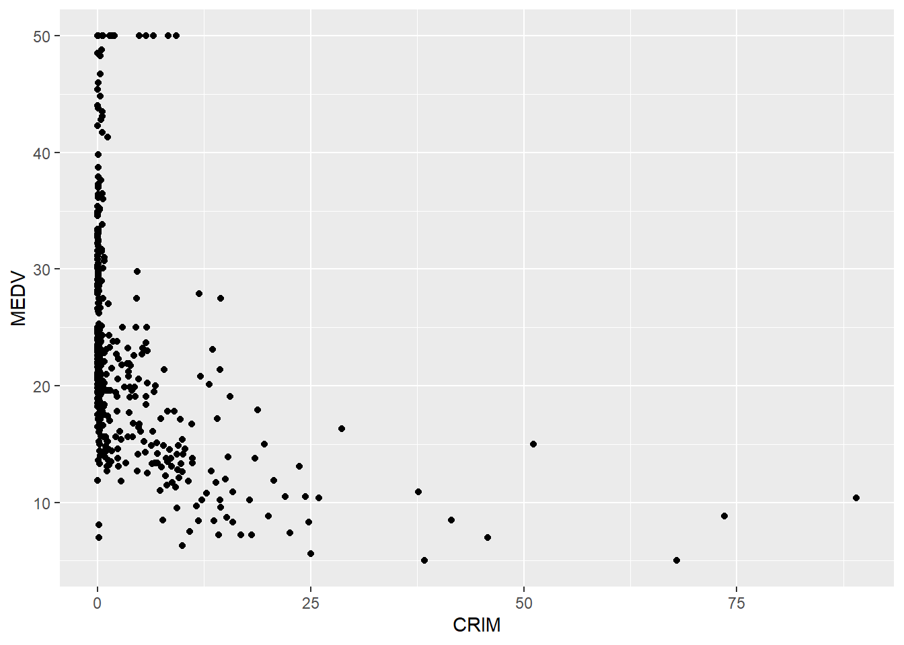

rm(list=ls())Assignment 3: Foundational R
Questions
Instructions: As you work through each of the following questions, make sure to Comment out the question number and describe what you are doing. This is in general good practice.
Question 1
In the YAML, make sure to write your name under “author.”
Set your working directory in the r setup chunk of code provided above.
Question 2
- In the code chunk provided below, clear your global environment (the memory of your data frames and other objects) by using the function rm(list=ls()). It is good practice to clear your global environment prior to starting a new project.
Question 3
Import the BostonHousing.csv data set. Name this data frame as “housing.” Write the proper code in the provided chunk below.
- Note: It is good practice to try to render after importing your data (and also periodically). This ensures that your working directory as you typed it and your data set locations are aligned. It also helps to check the box that says “Render on Save,” so that you save and render at the same time periodically.
housing <- read.csv("BostonHousing.csv")Question 4
View the first few roes of data. Write the proper code.
head(housing) CRIM ZN INDUS CHAS NOX RM AGE DIS RAD TAX PTRATIO LSTAT MEDV
1 0.00632 18 2.31 0 0.538 6.575 65.2 4.0900 1 296 15.3 4.98 24.0
2 0.02731 0 7.07 0 0.469 6.421 78.9 4.9671 2 242 17.8 9.14 21.6
3 0.02729 0 7.07 0 0.469 7.185 61.1 4.9671 2 242 17.8 4.03 34.7
4 0.03237 0 2.18 0 0.458 6.998 45.8 6.0622 3 222 18.7 2.94 33.4
5 0.06905 0 2.18 0 0.458 7.147 54.2 6.0622 3 222 18.7 5.33 36.2
6 0.02985 0 2.18 0 0.458 6.430 58.7 6.0622 3 222 18.7 5.21 28.7
ISHIGHVAL
1 1
2 1
3 1
4 1
5 1
6 1Question 5
What is the data type of AGE? Use the proper function in R and answer the question below.
Answer: The data type of AGE is “NUM”. By using command “str(housing$AGE)” I was able to figure it out.
str(housing$AGE) num [1:506] 65.2 78.9 61.1 45.8 54.2 58.7 66.6 96.1 100 85.9 ...Question 6
What is the data type of CHAS? Use the proper function in R.
Answer: The data type of CHAS is “INT”. By using command “str(housing$CHAS)” I was able to figure it out.
str(housing$CHAS) int [1:506] 0 0 0 0 0 0 0 0 0 0 ...Question 7
Are there any variables with the data type “CHAR”?
Answer: From the looks of it, there doesn’t seem to be any variables with the data type “CHAR”.
Question 8
Are there any variables that looks like it might be appropriate to be converted to a factor variable? Which ones and why? Convert them to factors in the gray space below.
Answer: Yes, I might be wrong on this, but I believe that CHAS, RAD, and ISHIGHVAL should be turned into factors because they represent different states.
housing$CHAS <- as.factor(housing$CHAS)
housing$RAD <- as.factor(housing$RAD)
housing$ISHIGHVAL <- as.factor(housing$ISHIGHVAL)Question 9
What is the data point located in row 233, column 6? Use the proper code.
Answer:8.337
housing[233,6][1] 8.337Question 10
What is the data point located in row 378, column 4? Use the proper code.
Answer: 0
housing[378,4][1] 0
Levels: 0 1Question 11
Use the proper R function to view only rows 202 through 204.Use the proper code.
housing[202:204,] CRIM ZN INDUS CHAS NOX RM AGE DIS RAD TAX PTRATIO LSTAT MEDV
202 0.03445 82.5 2.03 0 0.4150 6.162 38.4 6.270 2 348 14.7 7.43 24.1
203 0.02177 82.5 2.03 0 0.4150 7.610 15.7 6.270 2 348 14.7 3.11 42.3
204 0.03510 95.0 2.68 0 0.4161 7.853 33.2 5.118 4 224 14.7 3.81 48.5
ISHIGHVAL
202 1
203 1
204 1Question 12
Keep only data for the columns CRIM, CHAS, AGE, and MEDV. Create a new data frame for this set of columns called “housing_subset.”
housing_subset = housing[,c("CRIM","CHAS","AGE","MEDV")]Question 13
Using housing_subset, plot the relationship between the CRIM and MEDV variables using ggplot.
library(ggplot2)
ggplot()+ geom_point(data=housing_subset,aes(x=CRIM, y=MEDV))
Question 14
Using housing_subset, make sure to typecast CHAS as a factor variable (if you didn’t already do it before).
housing_subset$CHAS = as.factor(housing_subset$CHAS)Question 15
Using housing_subset, how many locations are are within census tract bounds of the river (see the CHAS variable). Use the table() function.
Answer: the answer is 35
table(housing_subset$CHAS)
0 1
471 35 Question 16
Using housing_subset, create a new variable that is the ratio of MEDV to CRIM. Call this variable “RATIO” and make sure it is added as a column in the housing_subset data frame.
Answer: #
housing_subset$RATIO <- housing_subset$MEDV/housing_subset$CRIMQuestion 17
Examine the descriptive statistics using the datasummary_skim() function.
summary(housing_subset) CRIM CHAS AGE MEDV RATIO
Min. : 0.00632 0:471 Min. : 2.90 Min. : 5.00 Min. : 0.074
1st Qu.: 0.08205 1: 35 1st Qu.: 45.02 1st Qu.:17.02 1st Qu.: 5.831
Median : 0.25651 Median : 77.50 Median :21.20 Median : 81.534
Mean : 3.61352 Mean : 68.57 Mean :22.53 Mean : 264.720
3rd Qu.: 3.67708 3rd Qu.: 94.08 3rd Qu.:25.00 3rd Qu.: 309.139
Max. :88.97620 Max. :100.00 Max. :50.00 Max. :3797.468 summary(housing) CRIM ZN INDUS CHAS NOX
Min. : 0.00632 Min. : 0.00 Min. : 0.46 0:471 Min. :0.3850
1st Qu.: 0.08205 1st Qu.: 0.00 1st Qu.: 5.19 1: 35 1st Qu.:0.4490
Median : 0.25651 Median : 0.00 Median : 9.69 Median :0.5380
Mean : 3.61352 Mean : 11.36 Mean :11.14 Mean :0.5547
3rd Qu.: 3.67708 3rd Qu.: 12.50 3rd Qu.:18.10 3rd Qu.:0.6240
Max. :88.97620 Max. :100.00 Max. :27.74 Max. :0.8710
RM AGE DIS RAD
Min. :3.561 Min. : 2.90 Min. : 1.130 24 :132
1st Qu.:5.886 1st Qu.: 45.02 1st Qu.: 2.100 5 :115
Median :6.208 Median : 77.50 Median : 3.207 4 :110
Mean :6.285 Mean : 68.57 Mean : 3.795 3 : 38
3rd Qu.:6.623 3rd Qu.: 94.08 3rd Qu.: 5.188 6 : 26
Max. :8.780 Max. :100.00 Max. :12.127 2 : 24
(Other): 61
TAX PTRATIO LSTAT MEDV ISHIGHVAL
Min. :187.0 Min. :12.60 Min. : 1.73 Min. : 5.00 0:215
1st Qu.:279.0 1st Qu.:17.40 1st Qu.: 6.95 1st Qu.:17.02 1:291
Median :330.0 Median :19.05 Median :11.36 Median :21.20
Mean :408.2 Mean :18.46 Mean :12.65 Mean :22.53
3rd Qu.:666.0 3rd Qu.:20.20 3rd Qu.:16.95 3rd Qu.:25.00
Max. :711.0 Max. :22.00 Max. :37.97 Max. :50.00
Question 18
Now, try to render your entire document to HTML prior to submitted. Submit the HTML file, which should be located in the same directory (folder) as your .qmd file. Do not provide an HTML hyperlink, as this can only be retrived in your local drive only. You must upload the HTML file itself onto Canvas.